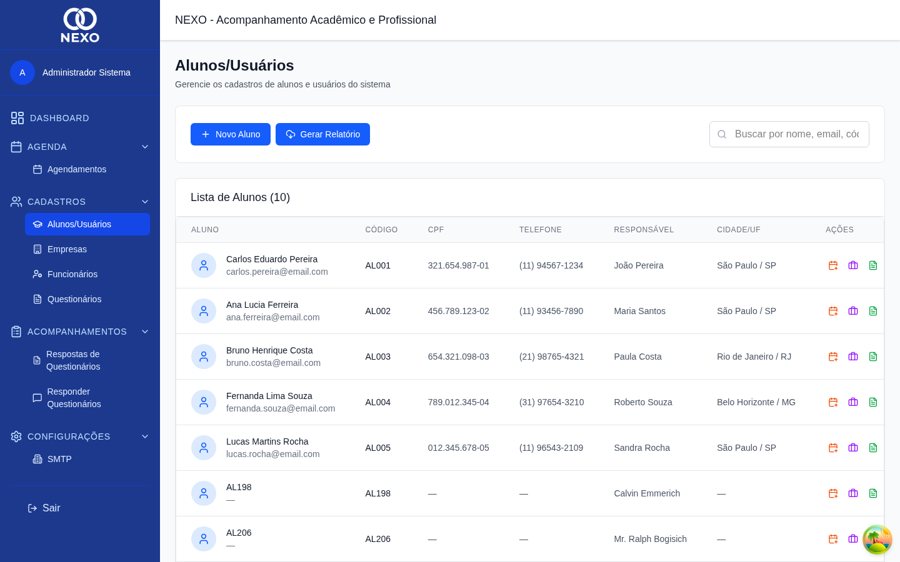
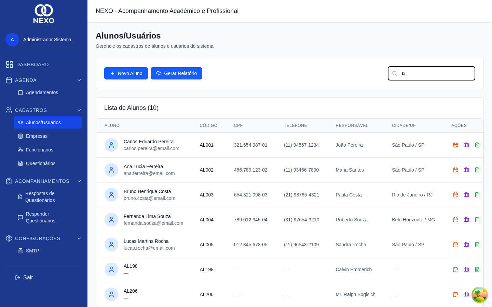
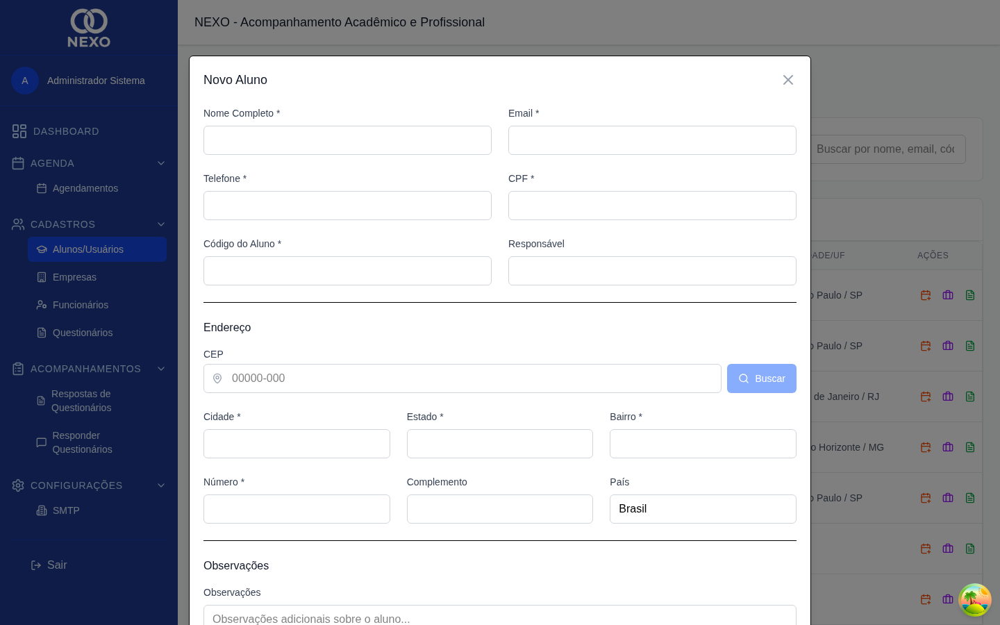
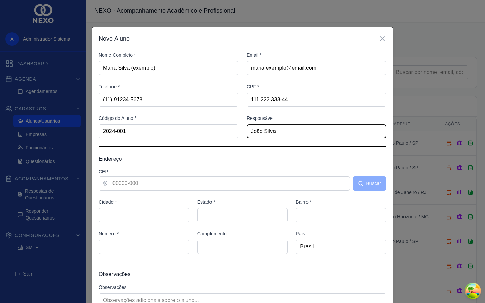
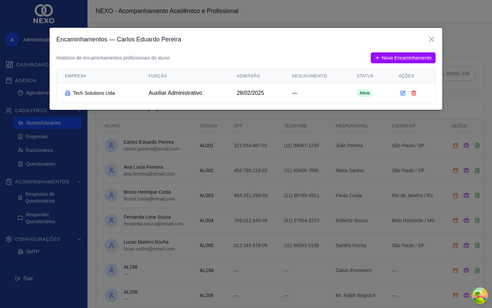
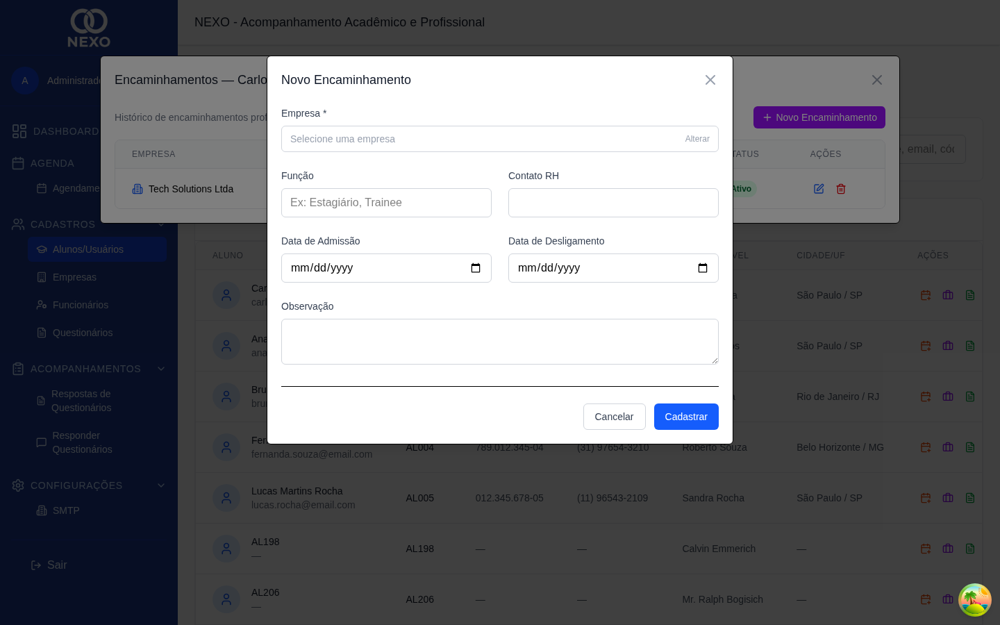

Alunos
O cadastro de alunos é a base do NEXO. A partir dele você acompanha a trajetória do estudante, registra encaminhamentos para empresas e aplica questionários.
| Ação | ADM | RH | COORD | PROF | DIR |
|---|---|---|---|---|---|
| Listar alunos | ✓ | ✓ | ✓ | ✓ | ✓ |
| Criar / editar / excluir | ✓ | ✓ | ✓ | ✓ | ✓ |
| Gerenciar encaminhamentos | ✓ | ✓ | ✓ | ✓ | ✓ |
1. Acessar a lista de alunos
No menu lateral, abra Cadastros → Alunos / Usuários. Você verá a lista com nome, CPF, e-mail, telefone, cidade e a quantidade de encaminhamentos de cada aluno.

Use a barra de busca para filtrar por nome, e-mail ou CPF. A pesquisa atualiza a lista enquanto você digita.

2. Cadastrar um novo aluno
-
Clicar em "Novo Aluno"
O botão azul fica no canto superior direito da lista.

Formulário em branco aguardando preenchimento. -
Preencher os dados pessoais
Nome completo, e-mail, telefone e CPF. O CPF é formatado automaticamente conforme você digita.
-
Preencher o endereço
Comece pelo CEP — o sistema busca cidade, estado e bairro automaticamente. Complete com número e complemento.

Cadastro com CEP buscado automaticamente. -
Informar matrícula e responsável
Os campos Código (matrícula) e Responsável são obrigatórios. Use o campo Observação para notas livres sobre o aluno.
-
Salvar
Clique em Salvar. O aluno aparece imediatamente na lista. Para cancelar sem salvar, use o botão Cancelar.
CPF e e-mail são únicos. Se já existir um aluno com esses dados, o sistema mostra uma mensagem de erro e a gravação não acontece.
3. Editar ou excluir um aluno
Na linha do aluno, clique no ícone de lápis para editar ou na lixeira para excluir. A exclusão pede confirmação e não pode ser desfeita.
4. Encaminhar o aluno para uma empresa
Um encaminhamento registra o vínculo do aluno com uma empresa parceira (estágio, emprego, treinamento etc.).
-
Abrir os encaminhamentos do aluno
Na linha do aluno, clique no ícone de seta para a direita. Uma janela exibe os encaminhamentos atuais.

Encaminhamentos do aluno selecionado. -
Clicar em "Novo Encaminhamento"
Preencha Empresa, Função, data de admissão e, opcionalmente, o contato de RH.

Cadastro de um novo encaminhamento. -
Registrar o desligamento (quando houver)
Quando o aluno deixa a empresa, edite o encaminhamento e preencha a Data de desligamento. Isso afeta o cálculo de "alunos colocados" no Dashboard.
Para emitir um relatório de alunos em PDF, clique no ícone de download no canto superior da lista. Veja mais em Relatórios.